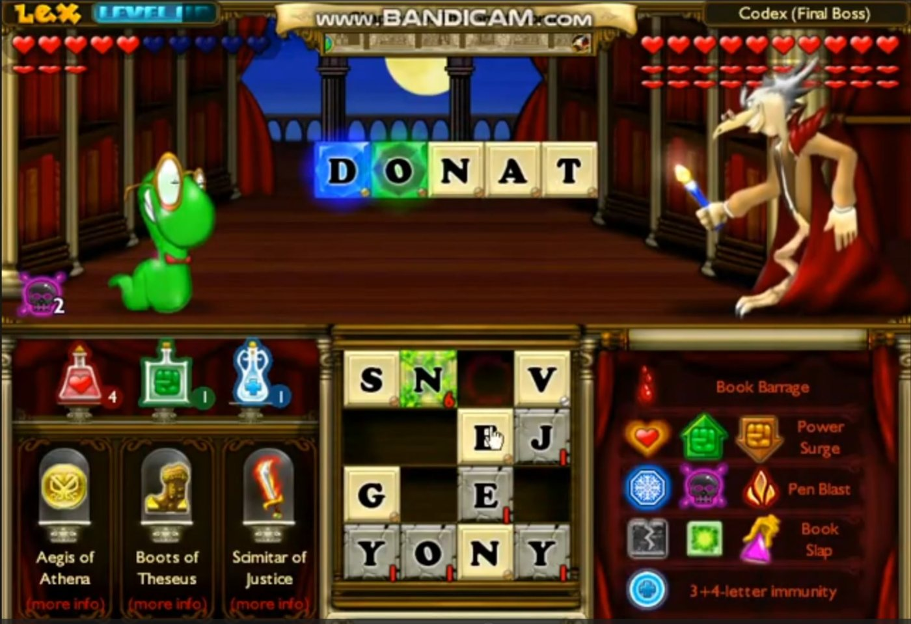
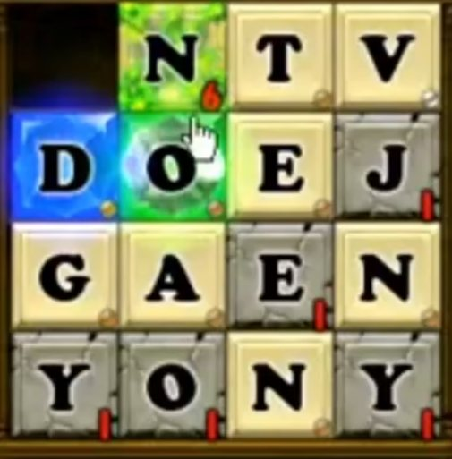
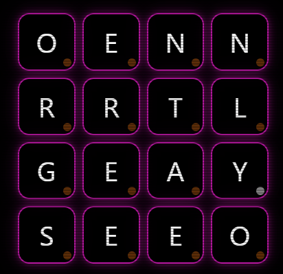
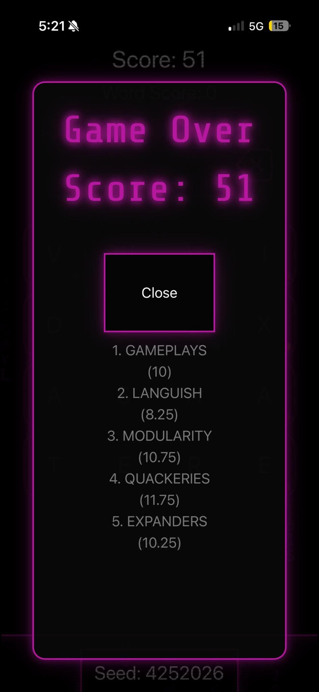

Lexicon
A browser spelling game inspired by Bookworm Adventures — and the project that taught me the user decides what's fun.
- Timeline
- January – March 2026
- Role
- Developer, Game Designer
- Tools
- HTML, CSS, JavaScript
- Status
- Polished MVP complete
The spark
When I was younger, my mom and I played a game called Bookworm Adventures. I loved the combination of:
- Words
- Strategy
- Competition
- Brain training
- Progression
Years later, I wanted to recreate part of that experience myself. Specifically:
What if spelling could actually feel like a game?

The goal
Build a usable spelling game where players are given a set of letters and have to create valid words. The game needed to be:
- Easy to understand
- Fast to play
- Actually challenging
- Satisfying
- Competitive
- Playable directly in a browser
Constraints
I intentionally kept the technology simple: basic HTML, CSS, and JavaScript.
I also needed a dictionary dataset that was actually usable inside a game. That turned out to be more annoying than expected.
The journey
-
Step 1
Getting the fundamentals working
The first challenge wasn't making the game look good. It was getting the fundamentals working. I needed to:
- Load a dictionary
- Clean the dataset
- Determine whether words were valid
- Build the game loop
- Create scoring
- Handle user input
- Make the interface responsive
- Tune the difficulty


Bookworm Adventures' letter grid (left) and Lexicon's (right). -
Step 2
Is it actually fun?
Then came the much harder question. I tested the game with real users and paid attention to:
- How long they played
- Whether they understood the rules
- Where they got frustrated
- Whether scoring felt fair
- How responsive the game felt
- Whether players wanted to play again
- Whether the difficulty was balanced
-
Step 3
Players made it competitive
I added new game modes and kept tuning the experience. Then something interesting happened.
People started competing with each other — challenging friends and coming back repeatedly.
The result
More than 10 users became consistently engaged with the game, with players returning for 7+ consecutive days.
The most interesting part wasn't the number. It was seeing players create their own competition and community around the game.

What I learned
I might care about how clever the implementation is. The player cares about whether the game is fun. That distinction matters.
Lexicon taught me about:
- Game loops
- User retention
- Community behavior
- Feedback-driven development
- Dataset cleaning
- Dictionary validation
- Scoring systems
- Game balance
- Responsive interfaces
- Designing around actual users rather than assumptions
It also taught me that a technically interesting project isn't automatically an interesting product. The users decide.
What's next
The MVP is complete, but there's a lot more I could do:
- Enemies, jewels, and health
- More progression
- Direct player challenges and multiplayer competition
- More game modes
- Leaderboards
- More mechanics inspired by Bookworm Adventures
The goal would be to turn the simple spelling mechanic into a larger game rather than simply adding more words.
Credits
Inspired by Bookworm Adventures by PopCap Games.
Dictionary resources include the SCOWL / Aspell word lists.